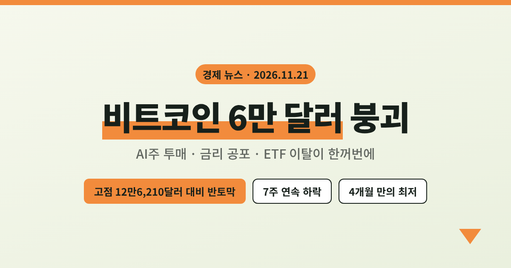
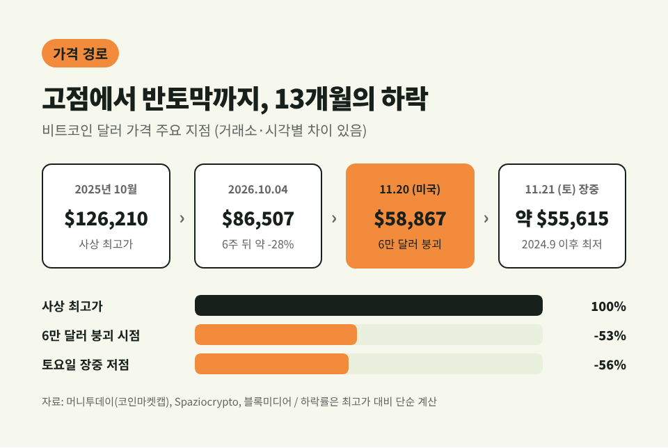
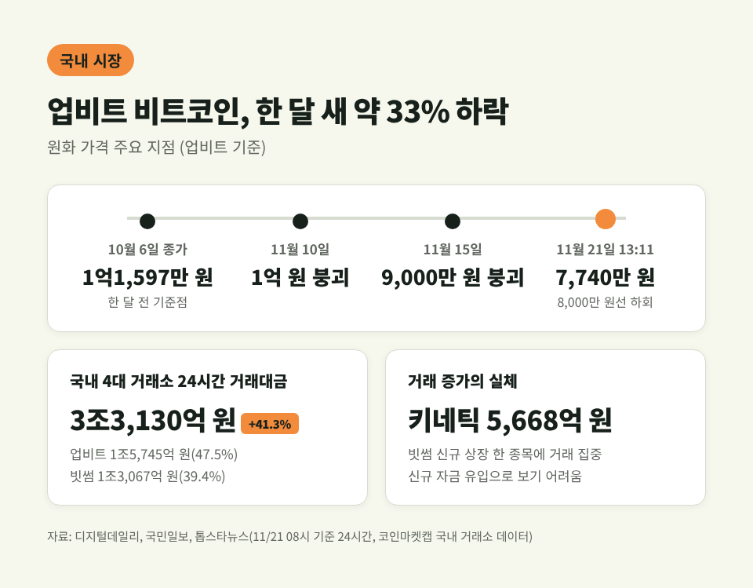
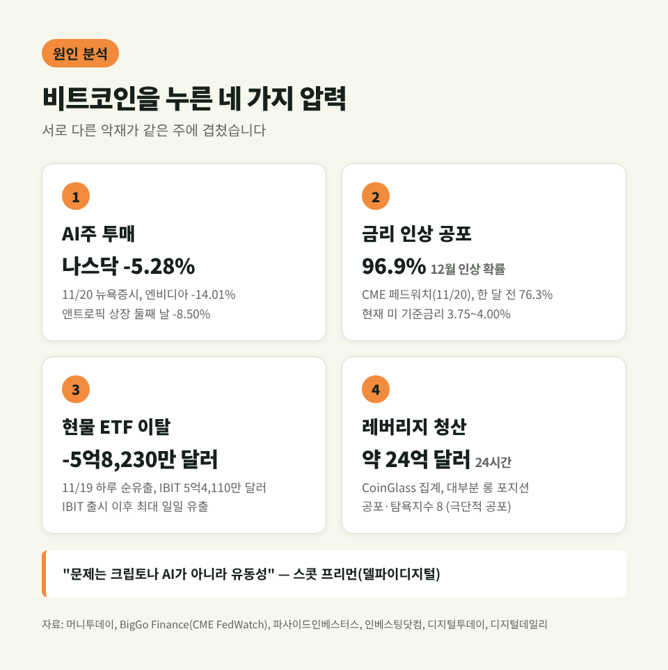
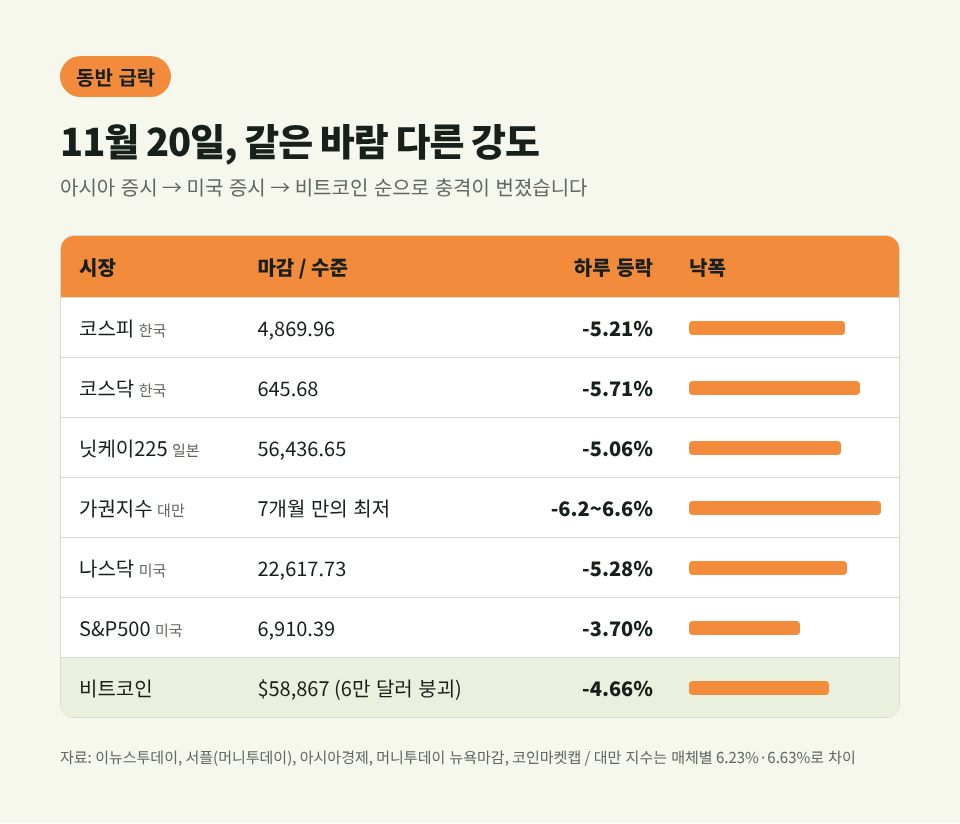
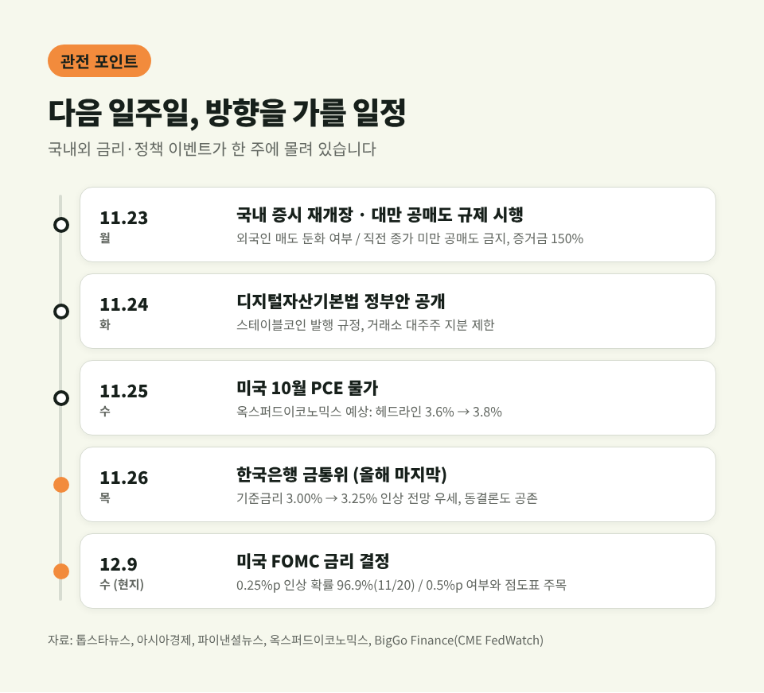

비트코인 6만 달러 붕괴, AI주 투매·금리 공포에 고점 반토막

이번 글에서는 비트코인 6만 달러 붕괴를 정리해 보겠습니다. 무슨 일이 있었는지, 왜 하필 지금인지, 국내 시장과 아시아 증시는 어떻게 엮였는지 차례로 짚습니다.
세 줄 요약
- 비트코인이 11월 20일(미국 시간) 6만 달러 아래로 내려갔습니다. 7월 이후 4개월 만이며, 2025년 10월 사상 최고가(12만6,210달러)의 절반에도 못 미칩니다.
- AI 기술주 투매, 연준 금리 인상 우려, 현물 ETF 자금 이탈, 레버리지 청산이 한꺼번에 겹쳤습니다.
- 다음 주 대만 공매도 규제 시행(23일), 미국 물가 지표(25일), 한은 금통위(26일), 12월 FOMC가 방향을 가를 변수입니다.
이 글은 정보 제공 목적이며 투자 권유가 아닙니다. 가상자산은 변동성이 매우 크므로 투자 판단과 책임은 본인에게 있습니다.
■ 무슨 일이 있었나 — 6만 달러, 그리고 그 아래
코인마켓캡 기준 비트코인은 5만8,867달러까지 밀렸습니다. 하루 전보다 4.66% 낮은 값입니다. 6만 달러를 내준 것은 7월 이후 처음입니다.
하락 속도도 가팔랐습니다. 비트코인매거진에 따르면 20일 오전 9시 40분(미 동부) 약 6만1,400달러였던 가격이 한 시간 남짓 만에 5만9,600달러 선까지 내려왔습니다. 장중 저점은 거래소마다 다릅니다. 포브스는 코인베이스 기준 약 5만7,650달러까지 떨어졌다고 전했습니다.
주간 흐름으로 보면 더 무겁습니다. 비트코인은 7주 연속 하락했습니다. 테라·루나 붕괴 여파로 8주 연속 내렸던 2022년 이후 가장 긴 약세입니다.
하락은 토요일에도 멈추지 않았습니다. 블록미디어 집계로 21일 오후 1시 45분 5만6,083달러, 장중 저점은 약 5만5,615달러였습니다. 지난여름 저점인 5만7,700달러마저 깨지면서, 국민일보는 5만7,000달러 아래가 2024년 9월 이후 처음이라고 보도했습니다. '4개월 만의 최저'라는 표현은 6만 달러가 깨진 금요일 기준이고, 주말을 지나며 저점은 더 낮아진 셈입니다.
고점과 비교하면 숫자가 분명해집니다. 최고가 12만6,210달러의 절반은 6만3,105달러입니다. 5만8,867달러 기준으로는 약 53%, 토요일 저점 기준으로는 약 56% 빠졌습니다.

■ 국내 시장 — 업비트 8,000만 원선도 무너졌다
원화 시장도 같은 길을 걸었습니다. 디지털데일리에 따르면 21일 오후 1시 11분 업비트 비트코인은 7,740만2,000원, 빗썸은 7,742만7,000원이었습니다. CBC뉴스는 오후 1시 16분 업비트 시세가 7,732만8,000원으로 8,000만 원선을 밑돌았다고 전했습니다.
한 달 전과 비교하면 낙폭이 더 크게 느껴집니다. 10월 6일 업비트 종가는 1억1,596만9,000원이었습니다. 그 뒤로 11월 10일 1억 원, 15일 9,000만 원, 21일 8,000만 원이 차례로 무너졌습니다. 한 달 새 약 33%가 사라진 것입니다.

흥미로운 대목은 거래대금입니다. 톱스타뉴스가 코인마켓캡 자료로 집계한 21일 오전 8시 기준 24시간 국내 4대 거래소 거래대금은 3조3,130억 원으로, 전날보다 41.3% 늘었습니다. 업비트가 1조5,745억 원(47.5%), 빗썸이 1조3,067억 원(39.4%)을 차지했습니다.
다만 이 숫자를 '저가 매수 자금 유입'으로 읽기는 어렵습니다. 빗썸에서 19일 원화마켓에 상장된 키네틱(KNTQ) 한 종목에만 5,668억 원이 몰렸습니다. 수수료 무료 이벤트가 겹친 시기였습니다. 기사도 거래대금 증가가 신규 자금 유입을 뜻하지는 않는다고 짚었습니다.
국내외 가격 차이도 눈여겨볼 만합니다. 국민일보 수치로 같은 시각 업비트 가격(7,785만 원)과 코인데스크 환산가(약 7,473만 원)를 단순 비교하면 국내가 4%가량 높았습니다. 시각과 환율 기준이 달라 정확한 프리미엄으로 보기는 어렵지만, 해외 급락이 국내에 시차를 두고 반영되는 모습입니다.
정책 일정도 맞물려 있습니다. 금융위원회는 24일 스테이블코인 발행 규정과 거래소 대주주 지분 제한을 담은 디지털자산기본법 정부안을 내놓을 예정입니다(파이낸셜뉴스).
■ 왜 지금인가 — 네 가지 압력이 한꺼번에
이번 급락은 한 가지 악재로 설명되지 않습니다. 서로 다른 압력이 같은 주에 겹쳤습니다.
첫째, AI주 투매입니다. 20일 뉴욕증시에서 나스닥은 5.28% 내린 22,617.73에 마감했습니다. S&P500은 3.70%, 다우는 1.93% 떨어졌습니다. 다우와 S&P500은 고점 대비 10% 넘게 빠지며 조정 국면에 들어섰고, 나스닥은 올해 상승분을 모두 반납했습니다(머니투데이). 엔비디아는 14.01% 폭락했습니다. 젠슨 황 CEO의 사임 이후 불확실성, 회계 관행과 대중국 수출 규정을 둘러싼 당국 조사 보도가 겹쳤습니다.
19일 상장한 앤트로픽도 시장을 흔들었습니다. 공모가 83달러, 첫날 17.1% 오른 97.17달러로 마쳤지만, 이튿날 8.50% 내린 88.30달러로 밀렸습니다. 대형 상장에 돈이 쏠리면서 기존 위험자산을 팔아 매수 자금을 마련했다는 분석이 여러 매체에서 나왔습니다.
STS디지털의 맥심 자일러는 이를 "AI·기술주가 이끄는 일방적 위험회피"로 봤습니다. 크레서스의 조던 크네히트는 비트코인이 가치저장 수단이 아니라 기술주처럼 움직이고 있다고 지적했습니다. 예전엔 '디지털 금'이라는 이름이 붙었습니다. 지금 시장은 비트코인을 나스닥과 같은 바구니에 담고 있습니다.
둘째, 금리 인상 공포입니다. 현재 미국 기준금리는 3.75~4.00%입니다. CME 페드워치 기준 12월 8~9일 FOMC에서 0.25%p 인상 확률은 20일 96.9%까지 올랐습니다. 한 달 전에는 76.3%였습니다. 크리스토퍼 월러 연준 이사는 18일 0.5%p 인상 가능성까지 언급했고, 리사 쿡 이사는 현재 금리가 인플레이션 대응에 충분하지 않다고 말했습니다. 이자를 주지 않는 자산에 금리 상승은 직접적인 부담입니다.
셋째, 현물 ETF 자금 이탈입니다. 파사이드인베스터스에 따르면 19일 미국 비트코인 현물 ETF에서 하루 약 5억8,230만 달러가 순유출됐습니다. 이 가운데 5억4,110만 달러가 블랙록 IBIT에서 빠졌습니다. IBIT 출시 이후 최대 일일 유출입니다. 10월 30일 이후 누적 순유출은 41억 달러에 이릅니다(이투데이·아시아경제). 블록미디어는 올해 들어 약 19억 달러 순유출로, 지난해 약 210억 달러 순유입과 대비된다고 전했습니다.
넷째, 레버리지 청산입니다. CoinGlass 집계로 24시간 파생상품 청산은 약 24억 달러였고, 비트코인 선물에서만 10억 달러가 넘었습니다(인베스팅닷컴). 청산 대부분은 가격 상승에 건 롱 포지션이었습니다. 가격이 내려가면 강제 매도가 나오고, 그 매도가 다시 가격을 누르는 고리입니다. 공포·탐욕지수는 8까지 떨어져 '극단적 공포' 구간에 들어섰습니다(디지털투데이).
델파이디지털의 스콧 프리먼은 이 모든 것을 한 단어로 묶었습니다. 문제는 크립토나 AI가 아니라 유동성이며, 비트코인과 AI주, 금이 같은 날 함께 맞은 것은 시장에 완충 장치가 없었기 때문이라는 진단입니다.

■ 코스피와 아시아 — 같은 바람, 다른 강도
비트코인이 무너지기 몇 시간 전, 아시아 증시가 먼저 흔들렸습니다.
20일 코스피는 267.93포인트(5.21%) 내린 4,869.96으로 마감했습니다. 1월 16일 이후 약 10개월 만의 최저입니다. 코스닥도 5.71% 하락해 두 시장에 동시에 매도 사이드카가 걸렸습니다.
외국인은 약 1조1,300억 원을 순매도했고, 13일부터 6거래일 연속 팔았습니다. 개인은 약 1조6,000억 원을 사들였지만 지수를 받치지 못했습니다. 삼성전자는 7.01%, SK하이닉스는 5.92% 내렸습니다. 지수 비중이 큰 반도체 대형주에 매도가 집중되면서, 전날 미국 증시(나스닥 -2.25%)보다 낙폭이 두 배 넘게 컸습니다. 미국의 대중국 반도체 수출통제 강화 우려도 한몫했습니다.
일본 닛케이225는 5.06% 떨어져 역대 다섯 번째 하루 낙폭을 기록했습니다. 대만 가권지수는 6%대 급락해 7개월 만의 최저로 밀렸습니다.
대만 당국은 곧바로 움직였습니다. 금융감독관리위원회는 21일, 23일부터 직전 영업일 종가보다 낮은 가격의 공매도를 금지한다고 발표했습니다. 공매도 최소 증거금 비율은 130%에서 150%로 올리고, 신규 주식 대여 중단을 권고했습니다. 6일과 19일에 이은 보름 새 세 번째 조치입니다. 앞선 두 차례 조치에도 하락이 이어졌다는 점은 규제만으로 흐름을 돌리기 어렵다는 방증이기도 합니다.
순서를 정리하면 이렇습니다. 19일 미국 기술주 약세가 20일 아시아 반도체주 투매로 번졌고, 같은 날 밤 나스닥 폭락과 함께 비트코인이 6만 달러를 내줬습니다. 24시간 쉬지 않는 가상자산 시장은 주말 동안 그 충격을 홀로 받아냈습니다.

■ 앞으로의 변수 — 다음 일주일 달력
다음 일주일은 일정이 촘촘합니다.
- 11월 23일(월): 국내 증시 재개장, 대만 공매도 규제 시행. 외국인 매도가 잦아드는지가 첫 시험대입니다.
- 11월 24일(화): 금융위 디지털자산기본법 정부안 공개.
- 11월 25일(수): 미국 10월 PCE 물가. 옥스퍼드이코노믹스는 헤드라인 PCE가 9월 3.6%에서 3.8%로 오를 것으로 예상합니다.
- 11월 26일(목): 한국은행 금통위. 현재 3.00%인 기준금리를 3.25%로 올릴 것이라는 전망이 우세하지만 동결론도 남아 있습니다.
- 12월 8~9일: FOMC. 0.25%p 인상은 거의 기정사실로 가격에 반영됐고, 관심은 0.5%p 여부와 내년 점도표로 옮겨가고 있습니다.

전문가 견해는 양쪽으로 갈립니다.
신중론 쪽에서는 마켓메이커 윈터뮤트가 약세장이 끝나지 않았다고 봅니다. 비트코인이 200주 이동평균(약 6만8,000달러) 아래에 있어 5만 달러대 압력이 이어질 수 있고, 6만8,000달러 회복과 ETF 자금 유입 재개가 반등의 조건이라는 설명입니다. 베테랑 트레이더 피터 브랜트는 과거 강세장마다 상승분의 75% 이상을 되돌리는 조정이 있었다고 짚었습니다. 확정 예측이 아니라 과거 패턴에 근거한 경고입니다. 코인셰어즈의 제임스 버터필도 이번 하락을 "기존 약세장의 연장"으로 평가했습니다.
반대편 시각도 있습니다. 분석가 렉트 캐피털은 4년 주기의 바닥이 가깝다며 남은 하락 여지가 크지 않다고 봤습니다. 로버트 기요사키는 금·은·비트코인의 하락이 장기 투자자에게는 기회일 수 있다고 말했습니다. 페어리드 스트래티지스의 케이티 스톡턴은 박스권 하단을 "6만 달러 바로 아래"로 제시했습니다.
어느 쪽이 맞을지는 아직 알 수 없습니다. 블록미디어가 정리한 온체인 지표로는 실현가격이 5만4,000달러 바로 아래, 5만~5만4,000달러가 주요 지지 구간으로 꼽힙니다. 결국 연준의 속도, 기술주 심리, ETF 수급이라는 세 갈래가 어떻게 풀리느냐에 달려 있습니다.
정리하면 이렇습니다.
이번 비트코인 6만 달러 붕괴는 코인 시장 내부의 사고라기보다, 금리와 AI 기대가 동시에 꺾이며 위험자산 전체에서 돈이 빠져나간 결과에 가깝습니다. 코스피 급락, 대만의 공매도 규제, 금값 하락이 같은 주에 나온 것도 같은 맥락입니다.
"유동성이 마르면 가장 먼저 흔들리는 것은 이야기로 버티던 자산이다" — 이번 한 주가 남긴 교훈을 저는 이렇게 읽습니다.
바닥이 어디냐고 물으신다면, 가격보다 금리와 자금 흐름을 먼저 보시라고 답하고 싶습니다.
다시 한번 말씀드립니다. 이 글은 정보 제공 목적이며 특정 가상자산의 매수·매도를 권유하지 않습니다. 본문 수치는 기사별 집계 시각·거래소 기준에 따라 차이가 있습니다.
참고자료
- 머니투데이 — 비트코인 4개월 만에 6만달러 붕괴…테라·루나 사태 이후 최장 약세 (2026-11-21)
- 머니투데이 — 나스닥 5%대 폭락 쇼크...엔비디아 14%↓[뉴욕마감] (2026-11-21)
- 이투데이 — 비트코인 4개월 만에 6만달러 붕괴, "저가매수 기회" vs "75% 조정" (2026-11-21)
- 뉴스1 — 비트코인, 4개월 만에 6만 달러 붕괴…ETF 자금 이탈에 '휘청' (2026-11-21)
- 아시아경제 — 비트코인 6만 달러선 무너졌다…지난해 최고가 절반 못 미쳐 (2026-11-21)
- 디지털투데이 — 6만달러 붕괴…AI주 투매에 암호화폐도 '휘청' (2026-11-21)
- IT타임스 — [11월 21일 코인 가격] 비트코인 6.07%↓ (2026-11-21)
- Investing.com 한국어 — 비트코인, 유동성 압박에 5만6,000달러 아래로 급락 (2026-11-21)
- 블록미디어 — 비트코인 55K로 밀려, "5만달러까지 하락" 경고 (2026-11-21)
- 디지털데일리 — 비트코인 7000만원대로 '털썩'…한 달 새 33% 폭락 (2026-11-21)
- 국민일보 — 비트코인 추락 어디까지⋯ 한 달 새 33% 하락 (2026-11-21)
- CBC뉴스 — 비트코인 시세, 8000만원선 하회 (2026-11-21)
- 톱스타뉴스 — 비트코인 급락에도 코인 거래대금 41%↑ (2026-11-21)
- 이뉴스투데이 — 코스피 5.21% 급락 (2026-11-20)
- 톱스타뉴스 — 코스피 왜 5%나 폭락했나…미국보다 더 빠진 이유 (2026-11-20)
- 서플(머니투데이) — 日닛케이 5.06%↓[Asia마감] (2026-11-20)
- 글로벌이코노믹 — 앤스로픽 상장 첫날 亞 증시 폭락 (2026-11-20)
- 아시아경제 — 대만, 증시 급락에 공매도 규제 강화…23일부터 가격 제한 (2026-11-21)
- 글로벌이코노믹 — 대만, 공매도 규제 강화…23일부터 전일 종가 밑 매도 금지 (2026-11-21)
- 파이낸셜뉴스 — 한은, 금리 인상으로 기울었나…내주 경제 핫이슈 (2026-11-21)
- Forbes — Bitcoin Plunges Below $60,000 As Risk-Off Trading Fuels Widespread Losses (2026-11-20)
- Bitcoin Magazine — Bitcoin Price Crashes Below $60,000 As Selloff Deepens (2026-11-20)
- BigGo Finance — Fed December Rate Hike Odds Jump to 97% (2026-11-20)
- Oxford Economics — US PCE nowcast (2026-11-16)